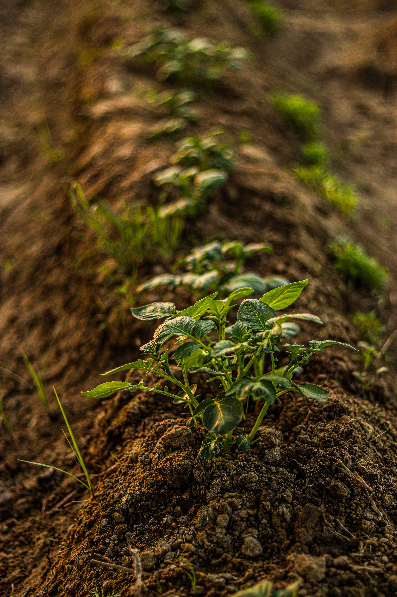

THE FUTURE OF AGRICULTURE
Smart technology for smarter farming. United Farmers is building a more efficient and sustainable future for agriculture.
Discover Our Innovation
THE PROBLEM
And yields can go dry.
Many people forget or do not have enough time to water their plants regularly.
Farmers face rising costs and labor shortages, making efficient farming increasingly important.
Manual watering can waste water when the soil is already moist.
Increase in food demand projected by 2050
OUR SOLUTION
United Farmers uses smart technology to monitor soil moisture and automatically water plants when needed.
A soil moisture sensor detects when the soil becomes dry.
The ESP32 processes the sensor data and decides when watering is needed.
The water pump automatically supplies water to the plant.
The OLED display and Blynk app allow the system to be monitored.
THE TECHNOLOGY
United Farmers combines sensors, automation and remote monitoring to create a smarter watering system.
Measures how much moisture is in the soil so the system knows when plants need water.
Acts as the brain of the system and processes the information from the sensor.
Automatically supplies water to the plants when the soil becomes too dry.
Displays important information locally while Blynk allows the system to be monitored remotely.
THE IMPACT
By delivering water only when it is needed, United Farmers can help reduce unnecessary water usage while keeping plants healthy.
Water is supplied based on actual soil moisture instead of a fixed schedule.
Plants receive water when the soil becomes too dry.
Farmers can monitor the system remotely using connected technology.
LOOKING AHEAD
United Farmers is only the beginning of our vision for smarter and more sustainable agriculture.
In the future, we plan to bring this project to a bigger, better, and more improved scale by developing more advanced features, improving the monitoring system, and expanding its capabilities for different types of farms and crops.
Our goal is to create a system that can help more farmers make smarter decisions, reduce unnecessary water usage, and build a more sustainable future for agriculture.